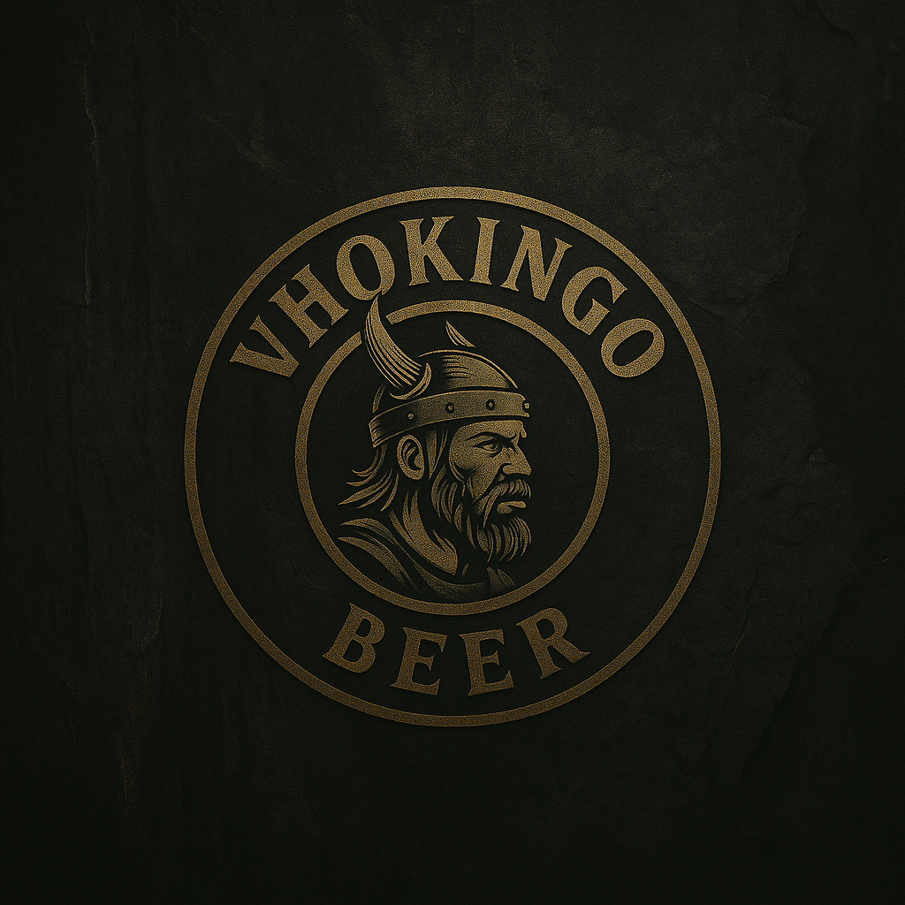

Vhokingo Beer
El elixir del guerrero moderno
La cerveza tiene raíces profundas en la cultura vikinga. Para los antiguos nórdicos, el hidromiel y la cerveza eran vistos como el “elixir de los dioses”, esenciales en banquetes y rituales. Ingredientes como la cebada y hierbas silvestres le daban sabor y propiedades únicas a sus brebajes.


En las largas noches del invierno escandinavo, encender hogueras y compartir una jarra de cerveza fortalecía la comunidad. Nuestras recetas modernas se inspiran en estas tradiciones ancestrales, adaptando sabores tradicionales a los gustos actuales.